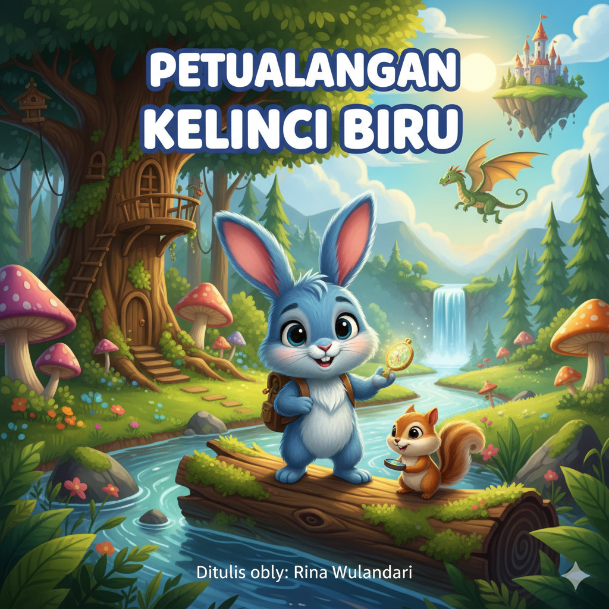
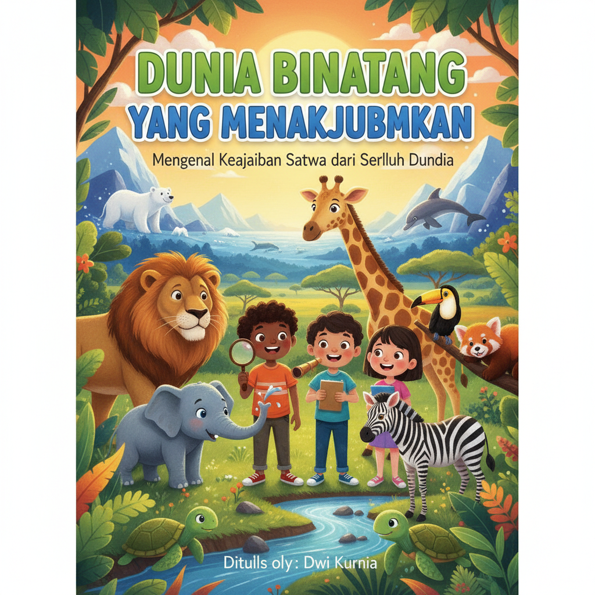
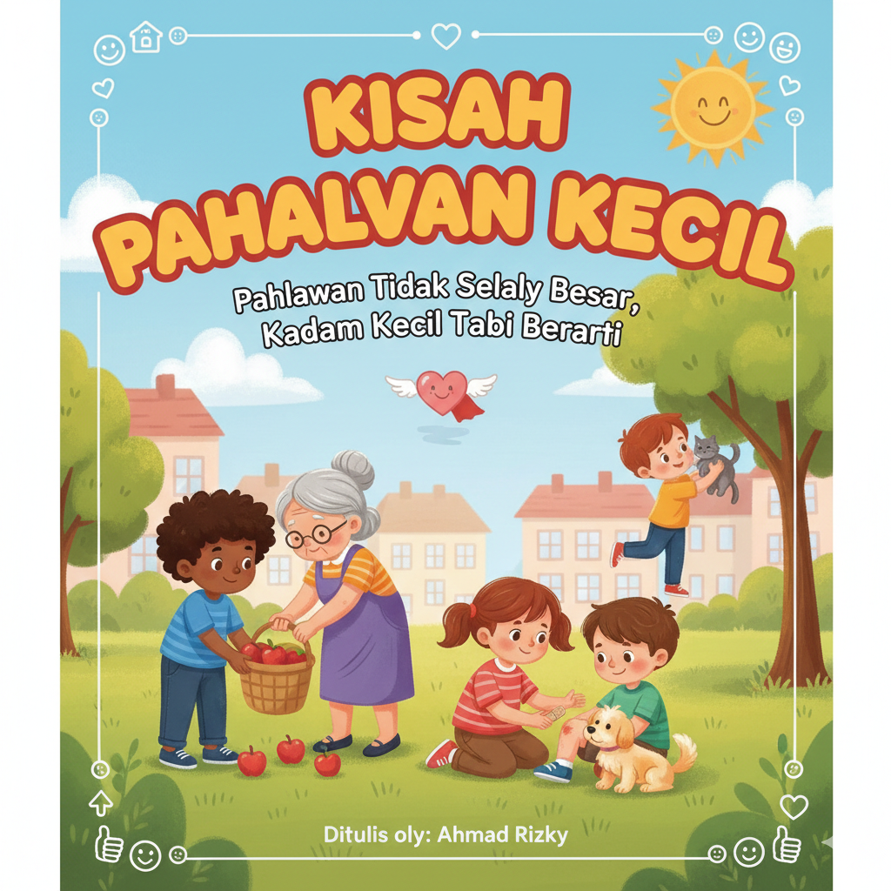
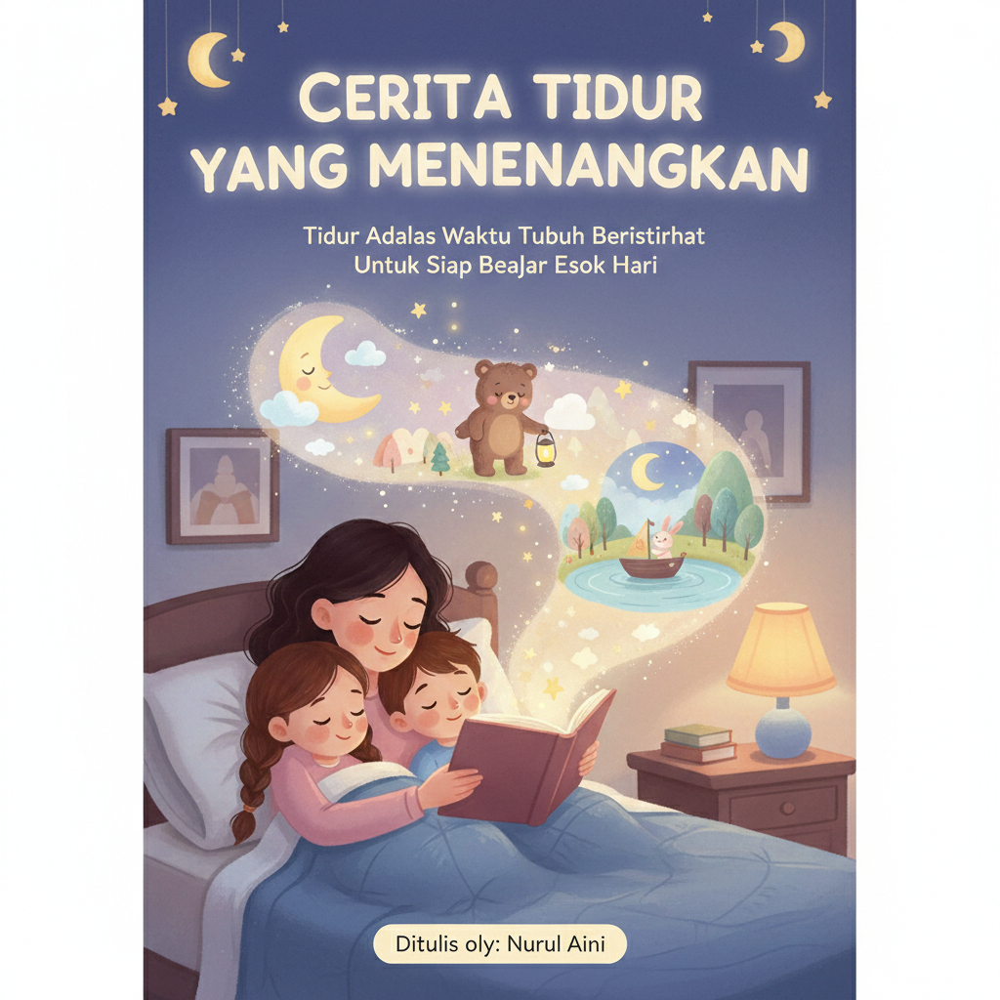
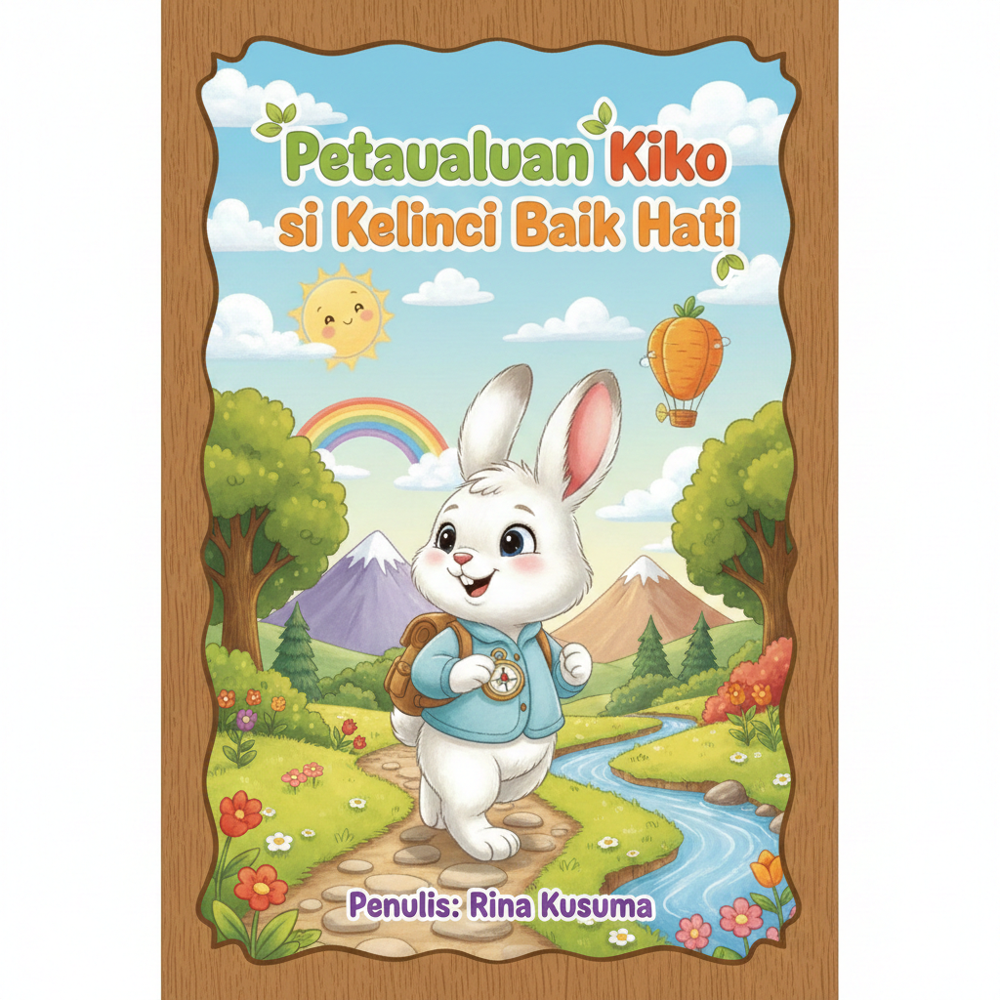

Bedah Buku: Negeri 5 Menara
Ditulis oleh: Ahmad Fuadi

Buku ini menceritakan perjalanan hidup Alif, seorang anak Minang yang menempuh pendidikan di pondok pesantren Madani.
Awalnya penuh keraguan, namun perlahan Alif menemukan makna perjuangan, persahabatan, dan kekuatan impian.
“Man Jadda Wajada – Siapa yang bersungguh-sungguh, dia akan berhasil.”
Kalimat itu menjadi semangat utama dalam buku ini. Kisah yang ditulis berdasarkan pengalaman nyata ini sangat menginspirasi,
terutama bagi pelajar yang sedang mengejar mimpi mereka. Penulis berhasil menyampaikan pesan-pesan moral melalui narasi yang hidup.
Buku ini cocok dibaca oleh remaja dan orang dewasa yang sedang mencari motivasi hidup. Cerita persahabatan, perjuangan, dan cinta belajar
membuatnya menyentuh dan relevan bagi pembaca di berbagai usia.
Bedah Buku: Iqra’ – Panduan Belajar Membaca Al-Qur’an
Disusun oleh: As’ad Humam

Buku Iqra’ merupakan panduan dasar untuk belajar membaca Al-Qur’an
yang disusun secara bertahap dan sistematis.
Materi disajikan dari huruf hijaiyah hingga rangkaian kata sederhana.
“Belajar membaca Al-Qur’an dimulai dari pengenalan huruf dan pelafalan yang benar.”
Buku ini cocok digunakan oleh anak-anak, remaja, maupun pemula
yang ingin belajar membaca Al-Qur’an.
Iqra’ sering digunakan sebagai bahan ajar di TPA dan madrasah.
Penyajian yang sederhana dan mudah dipahami
membantu proses belajar menjadi lebih cepat dan menyenangkan.
Bedah Buku: Si Kecil Pemberani
Ditulis oleh: Lina Salsabila

Buku ini menceritakan seorang anak kecil yang belajar berani menghadapi ketakutannya.
Melalui cerita sederhana dan ilustrasi yang cerah, anak diajak memahami bahwa keberanian bukan berarti tanpa takut,
melainkan tetap maju meski ragu.
“Berani bukan berarti tidak takut, tapi tetap mencoba meski takut.”
Cerita ini sangat cocok untuk anak usia 5–8 tahun. Orang tua bisa mengajarkan nilai keberanian, ketekunan,
dan pentingnya mencoba hal baru.
Pesan moralnya kuat tanpa terasa menggurui, sehingga anak akan merasa nyaman saat membaca.
Bedah Buku: Petualangan Kelinci Biru
Ditulis oleh: Rina Wulandari

Buku ini bercerita tentang kelinci biru yang mencari harta karun di hutan.
Sepanjang perjalanan, ia belajar arti persahabatan, kerja sama, dan saling membantu.
“Persahabatan adalah harta yang paling berharga.”
Dengan ilustrasi yang lucu dan cerita yang mudah dimengerti, buku ini sangat cocok untuk anak usia 4–7 tahun.
Anak akan belajar bahwa dalam hidup, tujuan terbaik seringkali dicapai bersama orang lain.
Bedah Buku: Dunia Binatang yang Menakjubkan
Ditulis oleh: Dwi Kurnia

Buku edukasi ini mengajak anak mengenal berbagai binatang dari seluruh dunia.
Setiap halaman berisi fakta menarik yang ditulis dengan bahasa sederhana.
“Semua makhluk hidup memiliki keunikan yang layak kita pelajari.”
Buku ini cocok untuk anak usia 6–10 tahun yang mulai penasaran dengan dunia sekitar.
Orang tua dapat menggunakan buku ini untuk mengajarkan rasa ingin tahu dan cinta alam.
Ilustrasi penuh warna membuat anak betah membaca dan belajar.
Bedah Buku: Belajar Membaca dengan Cerita
Ditulis oleh: Siti Nurhayati

Buku ini dirancang untuk anak yang baru mulai belajar membaca.
Menggunakan kalimat pendek, suku kata sederhana, dan cerita yang menarik.
“Membaca adalah pintu menuju dunia baru.”
Buku ini cocok untuk anak usia 5–7 tahun. Dengan latihan yang bertahap,
anak akan lebih percaya diri dalam membaca.
Orang tua bisa membacakan bersama, lalu anak mengikuti membaca sendiri.
Bedah Buku: Ayo Mengenal Angka
Ditulis oleh: Budi Santoso

Buku ini mengajarkan angka dengan cara yang menyenangkan melalui gambar dan permainan.
Cocok untuk anak usia 3–5 tahun yang sedang belajar berhitung.
“Belajar itu lebih mudah kalau disertai permainan.”
Anak akan belajar angka dasar, menghitung benda, dan mengenal konsep jumlah.
Buku ini sangat membantu anak agar tidak bosan belajar matematika sejak dini.
Bedah Buku: Kisah Pahlawan Kecil
Ditulis oleh: Ahmad Rizky

Buku ini bercerita tentang anak yang membantu orang lain dengan cara sederhana.
Tidak perlu kekuatan super, yang penting punya hati yang baik.
“Pahlawan tidak selalu besar, kadang kecil tapi berarti.”
Buku ini mengajarkan nilai empati, tolong-menolong, dan kepedulian.
Cocok untuk anak usia 6–9 tahun sebagai bahan belajar karakter.
Bedah Buku: Cerita Tidur yang Menenangkan
Ditulis oleh: Nurul Aini

Buku ini berisi kumpulan cerita pendek yang menenangkan sebelum tidur.
Ceritanya sederhana, lembut, dan penuh pesan positif.
“Tidur adalah waktu tubuh beristirahat untuk siap belajar esok hari.”
Cocok untuk anak usia 3–6 tahun. Orang tua bisa membacakan sebelum tidur
untuk membantu anak lebih rileks dan nyaman.
Ilustrasi hangat membuat suasana cerita semakin nyaman.
Bedah Buku: Petualangan Kiko si Kelinci Baik Hati
Ditulis oleh: Rina Kusuma

Buku ini menceritakan kisah seekor kelinci kecil bernama Kiko
yang suka menolong teman-temannya di hutan.
Ceritanya ringan, hangat, dan mudah dipahami anak-anak.
“Berbuat baik itu membuat hati kita dan orang lain menjadi bahagia.”
Buku ini cocok untuk anak usia 4–7 tahun.
Melalui cerita Kiko, anak-anak diajak belajar tentang
tolong-menolong, kejujuran, dan persahabatan.
Ilustrasi berwarna cerah dan karakter yang lucu
membuat anak tertarik untuk membaca hingga selesai.
← Kembali ke Katalog